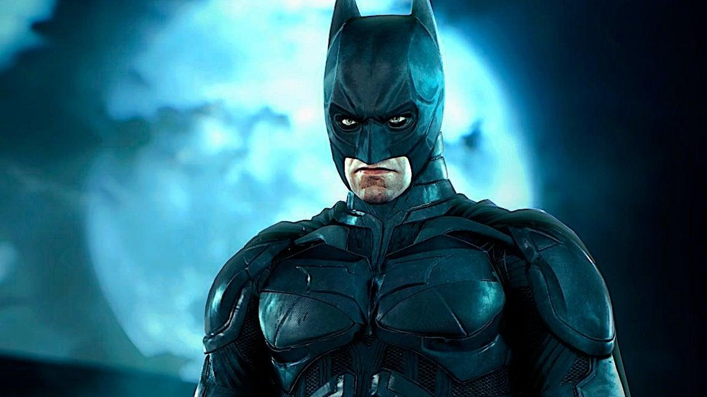
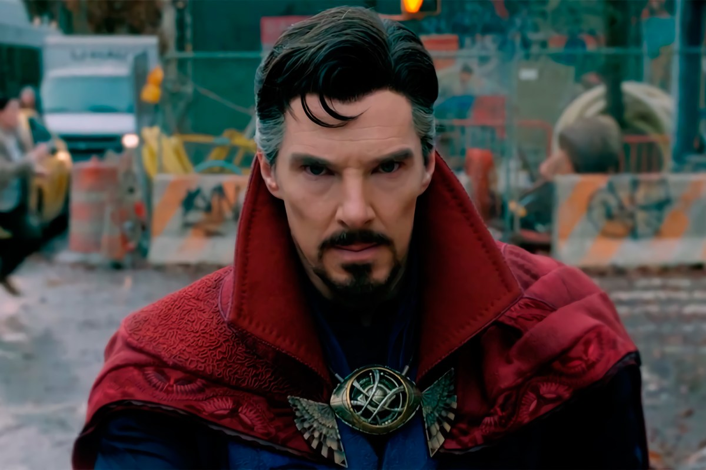

Iron Man |
Calificacion Promendio |

|
Anthony Stark nació con una inteligencia extrema. Después de la |

Batman |
Calificacion Promendio |
|  |
Batman, uno de los personajes ficticios más icónicos del mundo, |
Doctor Strange |
Calificacion Promendio |
|  |
El Doctor Stephen Strange, un neurocirujano muy reconocido, |